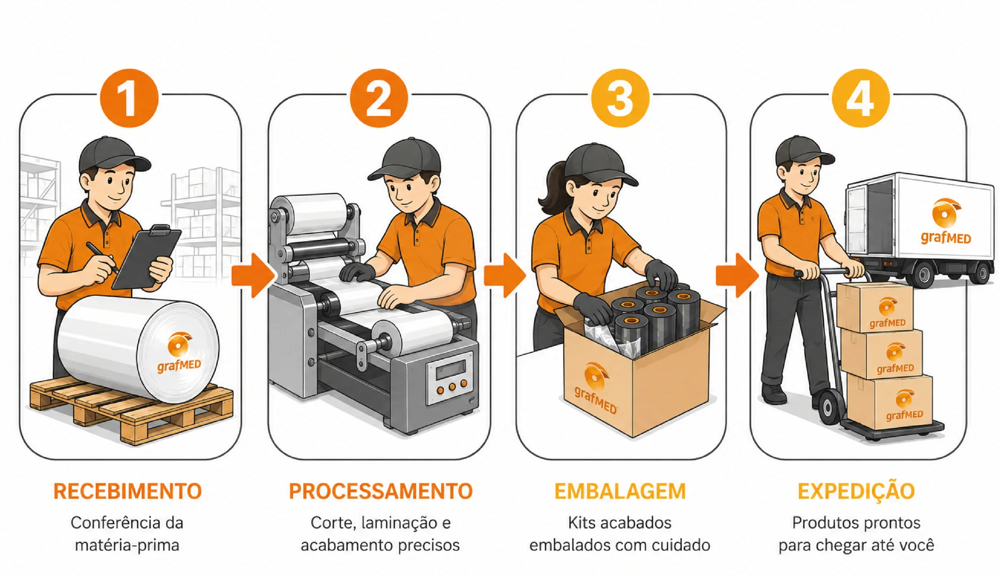
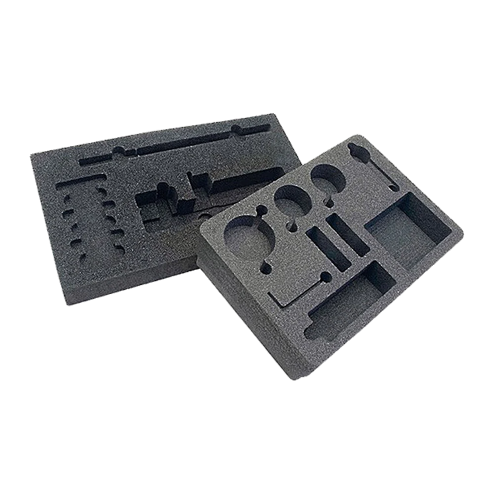
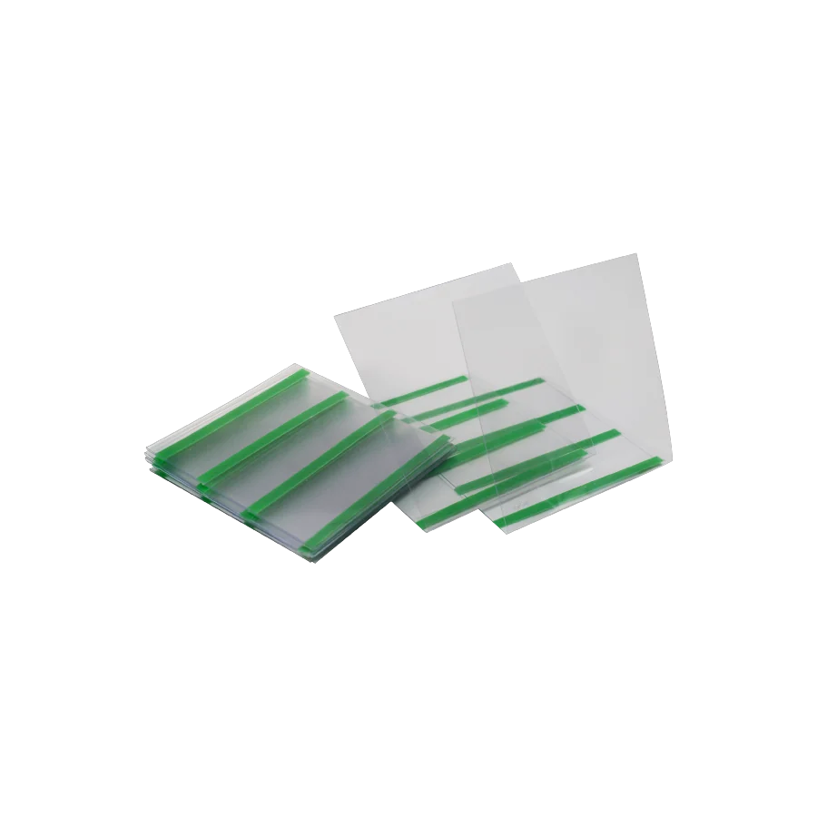

Peças em velcro
Bobinas de velcro convertidas em moedas e pastilhas para montagem de câmbio e peças de silicone.
Conversão · Serviços e OEM
Você envia a bobina. A grafMED corta, monta, embala e entrega pronto para uso ou revenda, sem você precisar de máquinas ou equipe de acabamento.
Como funciona · 4 etapas

Bobina ou rolo de matéria-prima.
Corte, montagem e acabamento.
Unitário ou em lote.
Pronto para uso ou revenda.
Por que terceirizar
Elimina etapas do seu processo produtivo interno.
Sem máquinas de corte e acabamento na sua planta.
Sem mão-de-obra especializada de acabamento.
Corte preciso e embalagem padronizada.
Quem usa
Bobinas de velcro convertidas em moedas e pastilhas para montagem de câmbio e peças de silicone.
Lâminas de madeira em rolo convertidas em peças cortadas prontas para aplicação no MDF.
Bobinas de micropore e feltro montadas em kits individuais prontos para o processo do cliente.
Produtos industriais

Sempre pensando em solucionar os problemas encontrados no mercado, de forma conjunta entre a indústria e a indústria de transformação, a grafMED realiza os projetos respeitando a confiabilidade e a confidencialidade acordadas.
Ver produto
O Fecho de Contato consiste de duas etiquetas de nylon, uma coberta com inúmeros ganchinhos flexíveis e a outra com pequenas argolas, que se prendem firmemente quando apertadas.
Ver produto
Multiuso, utilizadas para identificar itens em farmácias, almoxarifados, CME, logística, clínicas, hospital em geral, construtoras, empresas de engenharia, indústria alimentícia, bares e restaurantes, etc.
Ver produtoDescreva o que precisa e receba o orçamento pelo WhatsApp.
FAQ
Não achou a sua dúvida? Um especialista responde pelo WhatsApp.
Perguntar no WhatsApp Ver todas as perguntasVocê envia a bobina ou o rolo de material. A grafMED corta, monta, embala e entrega pronto para uso ou revenda.
Velcro, feltro, micropore, fita de bordo, silicone em rolo, espumas técnicas, fitas industriais e materiais adesivos, entre outros.
Não. A ideia é justamente tirar essa etapa da sua planta.